Dynasty × 灾变：力量与身份复查 V12
八轮实际修正，保留三位人形Boss、原骨架、脚部、约3格体型和战斗时间轴。下面使用真实Forge截图，未单独放大我们的角色来制造同级感。
具体差距与改动 · UV/骨架/动作检查 · 构建与原生验收
同相机、同裁切的游戏对照
灾变八只与Dynasty三只合在一张图
灾变3.27的原美术资产保持；仅在个人临时开发环境映射代码名称以运行，未复制到Dynasty。双方12m、70度FOV、1.62m视高、45度、日间，无额外资源包或光影。灾变自身发光、翼效及天空色变化保留，不能当作纯PNG效果。灾变作者展示
双方保留自身气场
Dynasty关闭独立气场，检查本体
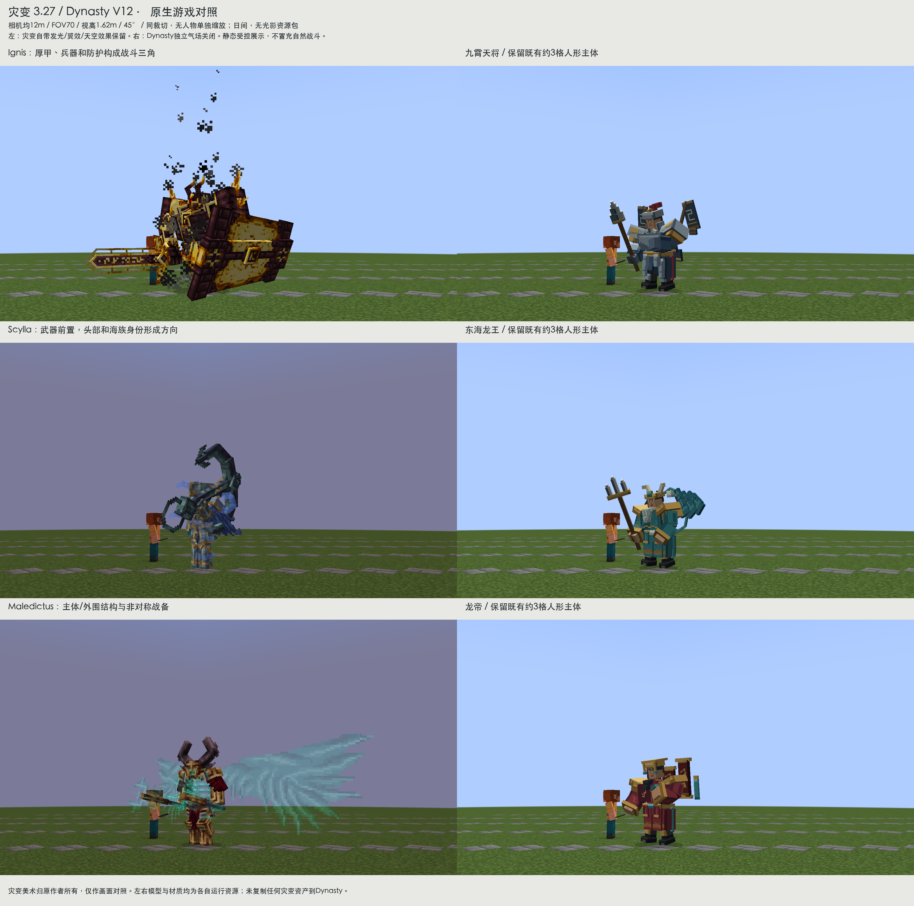
实际看过的灾变八大Boss与完整参考图
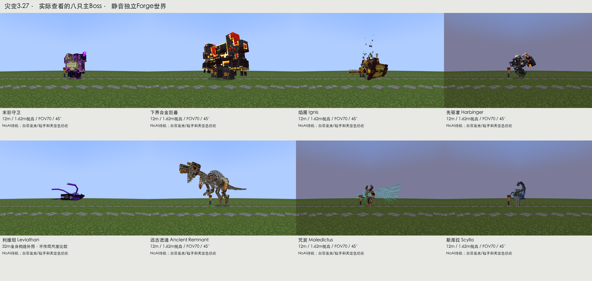
前7/8图为12m；利维坦触肢在12m裁切，因此另拍32m全身构造，明确不作同尺度比较。NoAI待机，不声称完整打过八场战斗。
我们的正常玩家比例与代表攻击
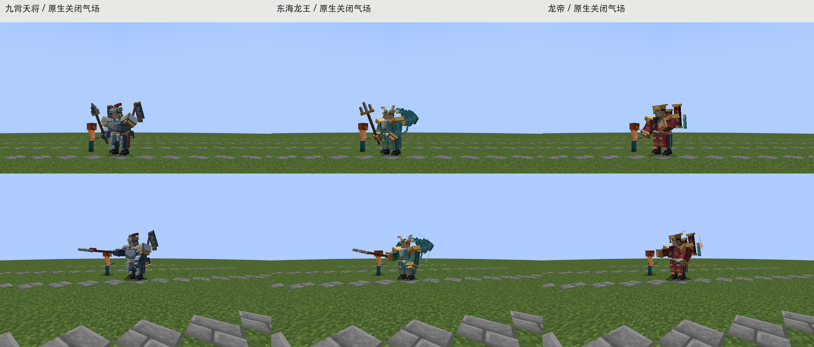
九霄天将 dynasty:nine_heaven_general
九霄天将：借鉴Ignis/末影守卫的肩胸与兵器主次。加厚已有肩胸、盔颊与手甲，收胸甲描线；锐化原枪尖端并转到前方战备，左手抬起。未增盾、改枪种或重做骨架。
V11 → V12 / 同机位原生前后对照
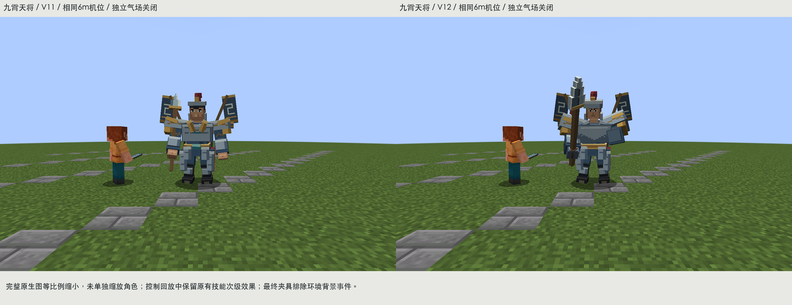
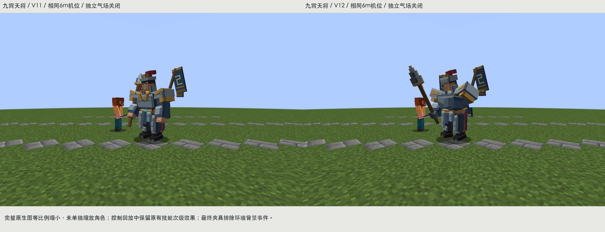
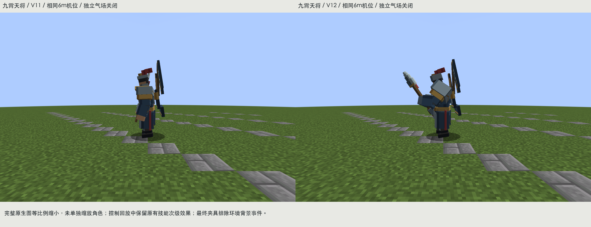
原色、普通基础光照、正侧背与剪影
独立气场开/关 · 同日光Forge截图
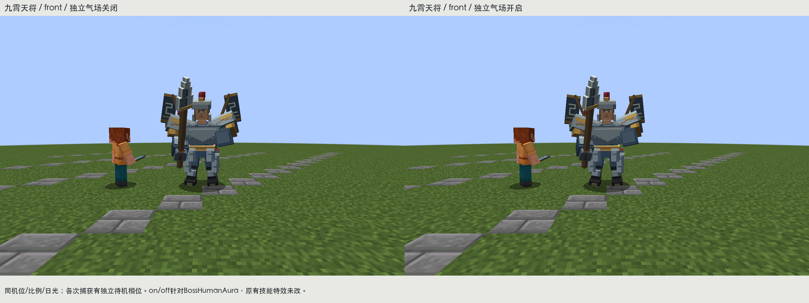
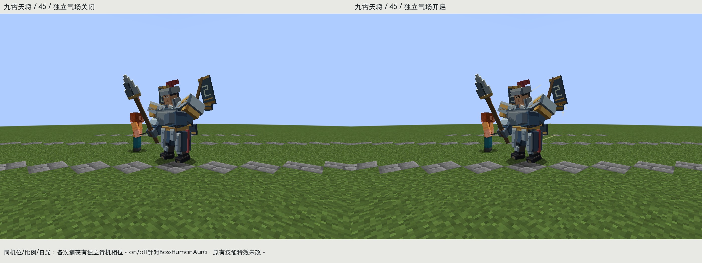
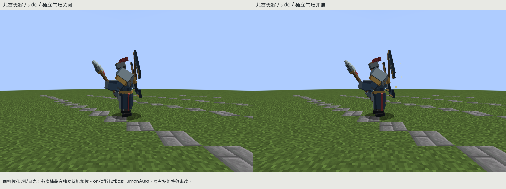
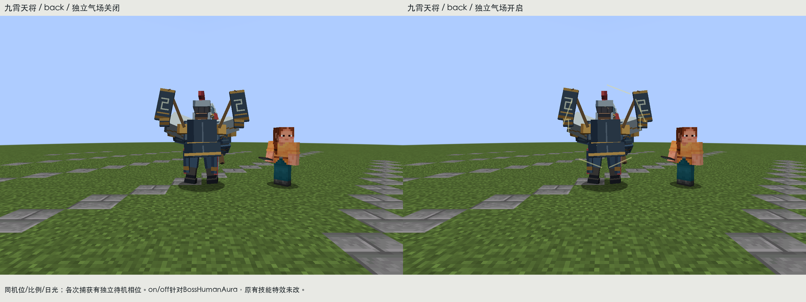
off仅关闭BossHumanAura，原有技能次级效果不改；临时测试世界排除scenic_21等环境背景事件，使用控制夹具，不冒充自然遭遇。
42状态中的本角色原图与姿态/哈希记录
实际PNG、4倍最近邻、UV方向、面部与手部近景
texture · 软件检查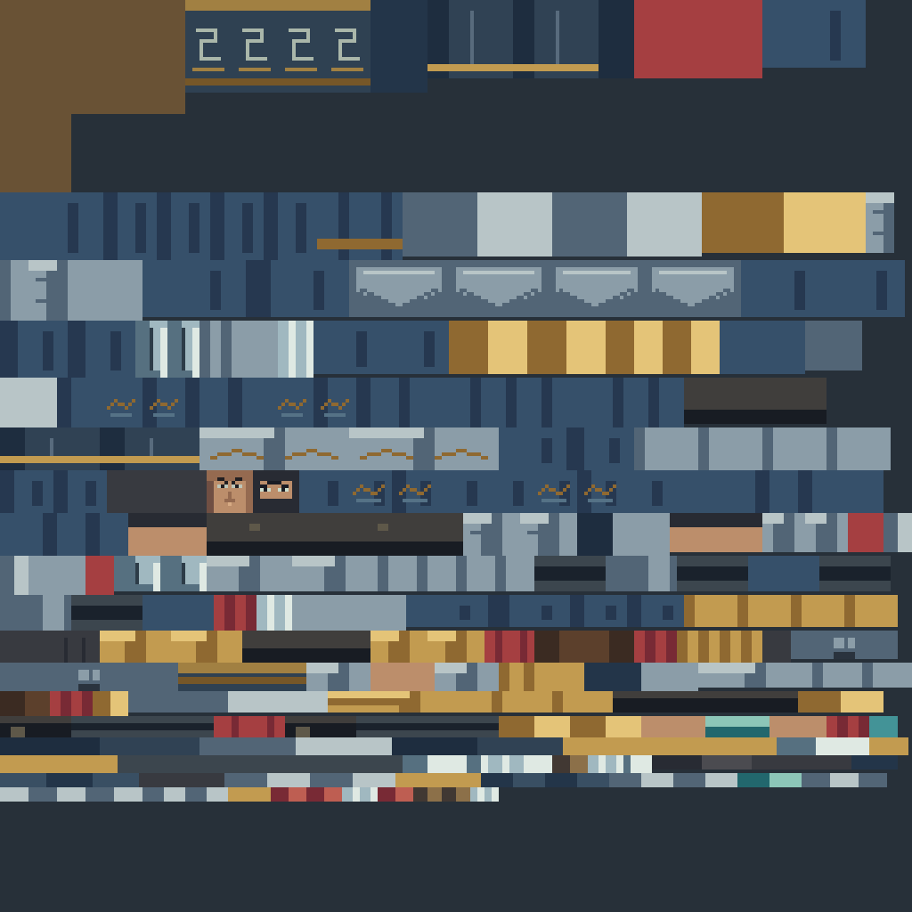
texture-4x · 软件检查uv-overlay-4x · 软件检查uv-direction · 软件检查close-face · 软件检查close-torso · 软件检查close-hand · 软件检查 六段完整模型资源回放
idle
walk
attack
cast
hurt
death
名字、时长、循环和接触时序保留；cast资源回放不等于服务器技能同步。可编辑bbmodel
东海龙王 dynasty:dragon_king
东海龙王：借鉴Scylla的前方攻击方向、利维坦的观察与危险器官主次。保留人脸龙冠白须；加厚已有肩披、恢复须髯层次、收拢背鳍衔接；海青王袍与金甲、玉、织纹分开。
V11 → V12 / 同机位原生前后对照
原色、普通基础光照、正侧背与剪影
front-unlit · 真实PNG逐面采样的软件检查，非游戏截图front-lit · 真实PNG逐面采样的软件检查，非游戏截图45-lit · 真实PNG逐面采样的软件检查，非游戏截图side-lit · 真实PNG逐面采样的软件检查，非游戏截图back-lit · 真实PNG逐面采样的软件检查，非游戏截图silhouette · 真实PNG逐面采样的软件检查，非游戏截图scene · 真实PNG逐面采样的软件检查，非游戏截图gray-model · 真实PNG逐面采样的软件检查，非游戏截图compare-front · 真实PNG逐面采样的软件检查，非游戏截图compare-45 · 真实PNG逐面采样的软件检查，非游戏截图compare-side · 真实PNG逐面采样的软件检查，非游戏截图gray · 真实PNG逐面采样的软件检查，非游戏截图dim · 真实PNG逐面采样的软件检查，非游戏截图distance-8m · 真实PNG逐面采样的软件检查，非游戏截图distance-16m · 真实PNG逐面采样的软件检查，非游戏截图 独立气场开/关 · 同日光Forge截图
off仅关闭BossHumanAura，原有技能次级效果不改；临时测试世界排除scenic_21等环境背景事件，使用控制夹具，不冒充自然遭遇。
42状态中的本角色原图与姿态/哈希记录
实际PNG、4倍最近邻、UV方向、面部与手部近景
texture · 软件检查texture-4x · 软件检查uv-overlay-4x · 软件检查uv-direction · 软件检查close-face · 软件检查close-torso · 软件检查close-hand · 软件检查 六段完整模型资源回放
idle
walk
attack
cast
hurt
death
名字、时长、循环和接触时序保留；cast资源回放不等于服务器技能同步。可编辑bbmodel
龙帝 dynasty:dragon_emperor
龙帝：借鉴Maledictus的非对称战备、Harbinger的中心/外围主次。保留人脸帝冕黑须与左手玉印；加厚肩胸、抬掌印、修须根遮挡，礼屏降对比，王袍叠领与袖体分层。
V11 → V12 / 同机位原生前后对照
原色、普通基础光照、正侧背与剪影
front-unlit · 真实PNG逐面采样的软件检查，非游戏截图front-lit · 真实PNG逐面采样的软件检查，非游戏截图45-lit · 真实PNG逐面采样的软件检查，非游戏截图side-lit · 真实PNG逐面采样的软件检查，非游戏截图back-lit · 真实PNG逐面采样的软件检查，非游戏截图silhouette · 真实PNG逐面采样的软件检查，非游戏截图scene · 真实PNG逐面采样的软件检查，非游戏截图gray-model · 真实PNG逐面采样的软件检查，非游戏截图compare-front · 真实PNG逐面采样的软件检查，非游戏截图compare-45 · 真实PNG逐面采样的软件检查，非游戏截图compare-side · 真实PNG逐面采样的软件检查，非游戏截图gray · 真实PNG逐面采样的软件检查，非游戏截图dim · 真实PNG逐面采样的软件检查，非游戏截图distance-8m · 真实PNG逐面采样的软件检查，非游戏截图distance-16m · 真实PNG逐面采样的软件检查，非游戏截图 独立气场开/关 · 同日光Forge截图
off仅关闭BossHumanAura，原有技能次级效果不改；临时测试世界排除scenic_21等环境背景事件，使用控制夹具，不冒充自然遭遇。
42状态中的本角色原图与姿态/哈希记录
实际PNG、4倍最近邻、UV方向、面部与手部近景
texture · 软件检查texture-4x · 软件检查uv-overlay-4x · 软件检查uv-direction · 软件检查close-face · 软件检查close-torso · 软件检查close-hand · 软件检查 六段完整模型资源回放
idle
walk
attack
cast
hurt
death
名字、时长、循环和接触时序保留；cast资源回放不等于服务器技能同步。可编辑bbmodel
复查边界
建模本体和生产PNG有实际改动，未更换三者主题、脚部、骨架、碰撞、伤害或任务。前七次资源与失败点保留在iterations目录。构建、真实加载和控制动作分别记录；自然战斗编排、复杂地形、联机、真实装备交互与服务器cast同步待验证，不能因静态并排好看便宣称完整战斗演出等同灾变。没有改变系统声音、亮度或用户愚者存档。